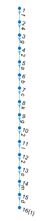
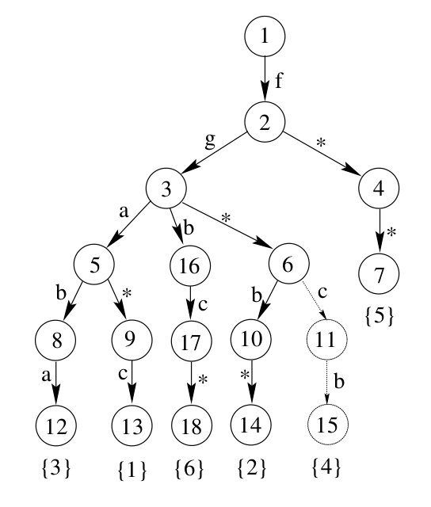
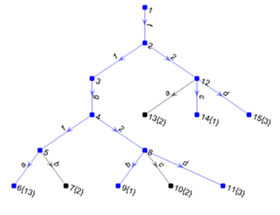
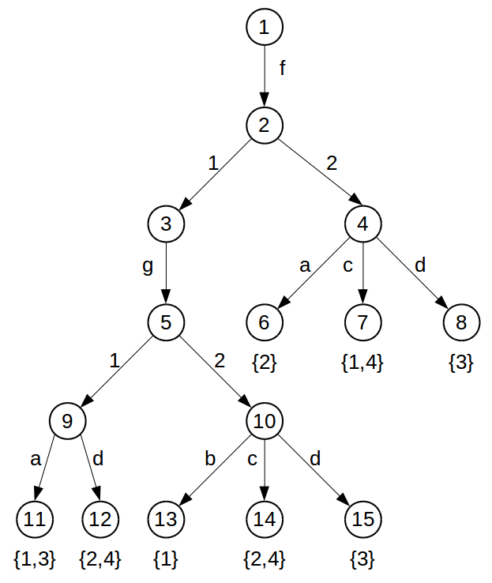
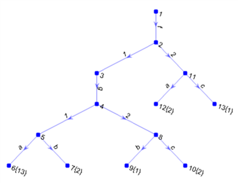
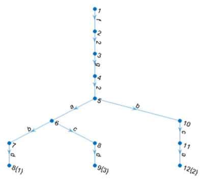
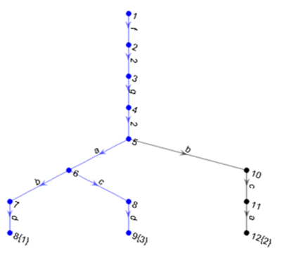
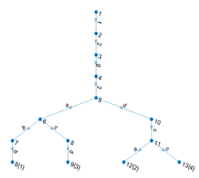
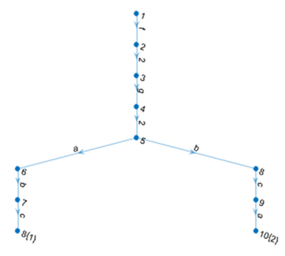

Арляпов С.B., Черкашин Е.А., Ларионов А.А.
Теорема LCL-129-1.p
Через 270 секунд порождает 8 272 207 дизъюнктов. Из них 5 203 928 не включаются. Из остатка (3 068 279) остаются 8 053 обобщенных (gen).
Пространство поиска сократилось в 1000 раз.
| где Q - это квантор, X - множество переменных, А - набор атамарных формул, Fi - ПО-формула, с квантором, который отличен от предыдущего квантора. |
|
| Дано L - множество термов R(l,t) - отношение t - терм запрос Необходимо найти M={l : l ∈ L, R(l,t)} |
Примеры R inst(l,t) ⇔ ∃𝜎 l=t𝜎; gen(l,t) ⇔ ∃𝜎 l𝜎=t; |
Поддержка
|
Поиск
|
//Origin f(g(a,b),c,k,g(l(e,m),d)) //Path String f.1.g.1.a f.1.g.2.b f.2.c f.3.k f.4.g.1.l.1.e f.4.g.1.l.2.m f.4.g.2.d //Discrimination tree f.g.a.b.c.k.g.l.e.m.d
Для терма f(g(a,b),c,k,g(l(e,m),d))
индекс имеет вид:
| Для терма f(g(a,b),c,k,g(l(e,m),d)) индекс имеет вид: |
 |
| База:f(g(a,b),c);f(g(b,c),a);f(g(a,d),d). | Терм-запрос:f(g(a,*),*) Inst:f(g(a,b),c);f(g(a,d),d). |
| Добавление f(g(b,c),c). |  Удаление третьего терма. |
| База:f(g(a,b),c);f(g(b,c),a);f(g(a,d),d). | Терм-запрос:f(g(a,*),*) Inst:f(g(a,b),c);f(g(a,d),d). |
| Добавление f(g(b,c),c). |  Удаление третьего терма. |
| Язык программирования: Rust. Среда разработки: Visual Studio Code. Дополнительно: Cargo, RustC, Gnome Terminal. |
pub struct Index {
pub next: Vec<Index>,
pub node_ind: usize,
pub pointer: String,
pub data: Vec<usize>,
pub num_type : bool
}
pub struct Base {
pub main_ind: Index,
pub n_terms: usize
}
pub fn new()
pub fn add_term(&mut self,s:&String)
pub fn del_term(&mut self,i:&usize)
pub fn to_string(&self)->String
pub fn inst(base:&Base,quest:&Index)->Vec<usize>
pub fn gen(base:&Base,quest:&Index)->Vec<usize>
f(g(a,b),c)
root_
f
1
g
1
a
2
b
2
c
f(g(a,b),c)
root_
f [2]
g [2]
a
b
c | Модуль | Время компиляции, мс |
Время работы, мс |
|---|---|---|
| PString | 14 | 179 |
| DTree | 11 | 713 |
До 12.06.2016 планируется адаптировать библиотеки для АДТ Prisnif, а также реализовать функцию backtracking, которая даст возможность производить откат базы до предыдущего состояния.
- R. Sekar, I.V.Ramakrishan, A. Voronkov “Term Indexing” в книге “Handbook of Automated Reasoning”, том II.
- А. А. Ларионов, Е. А. Черкашин “Программные технологии для эффективного поиска логического вывода в исчислении позитивно-образованных формул”
- The Rust Programming Language